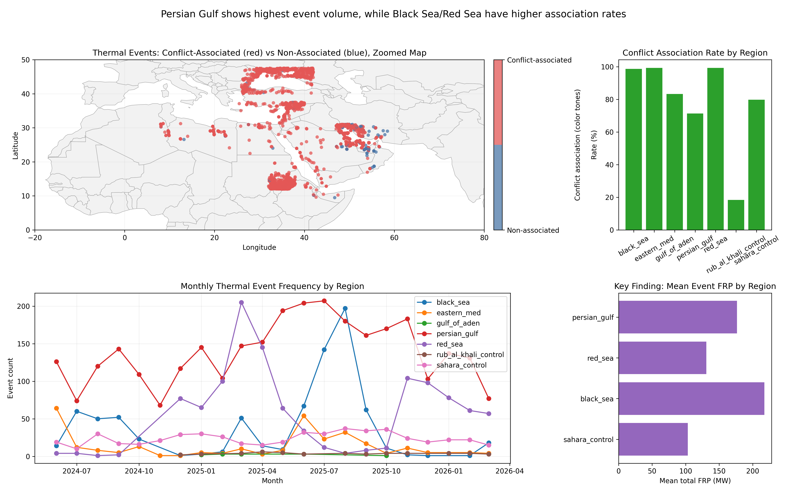
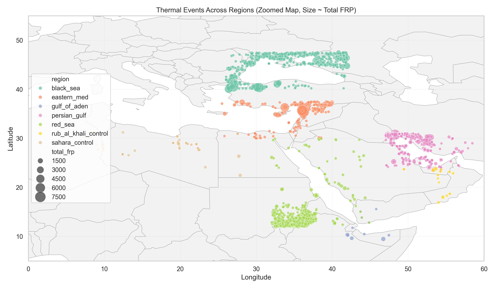
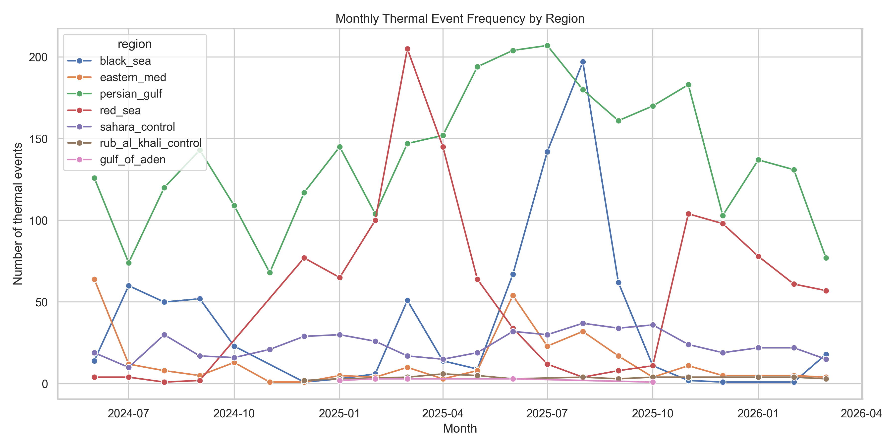
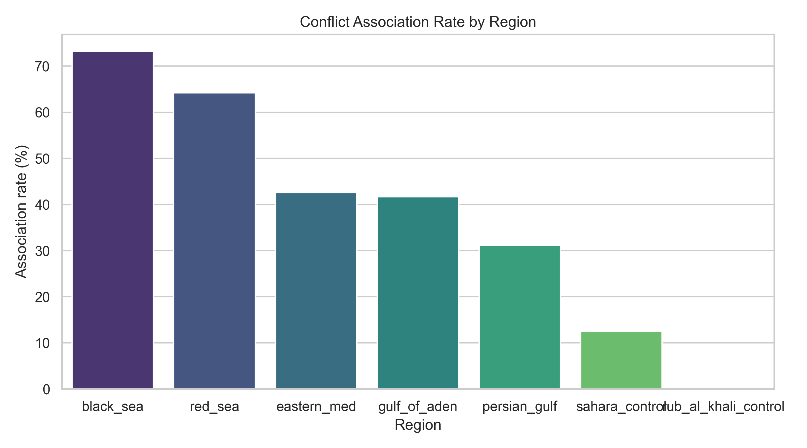
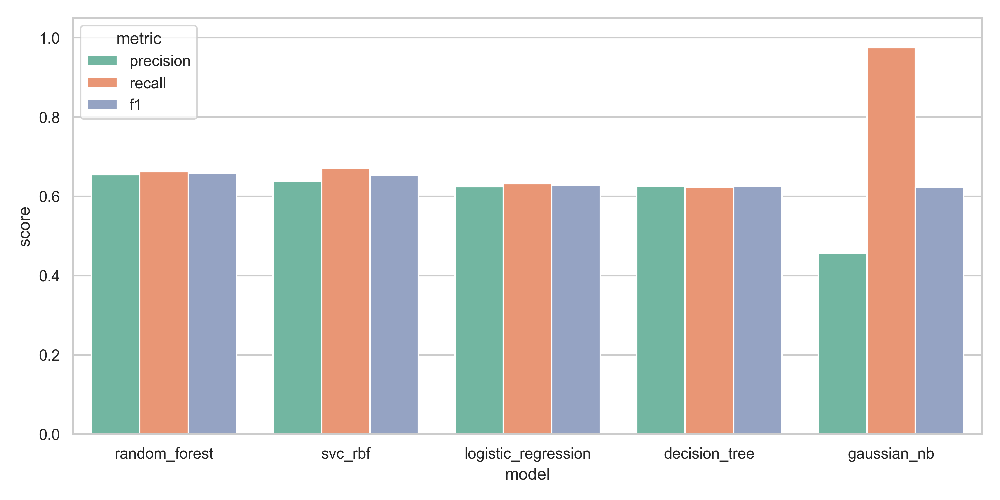
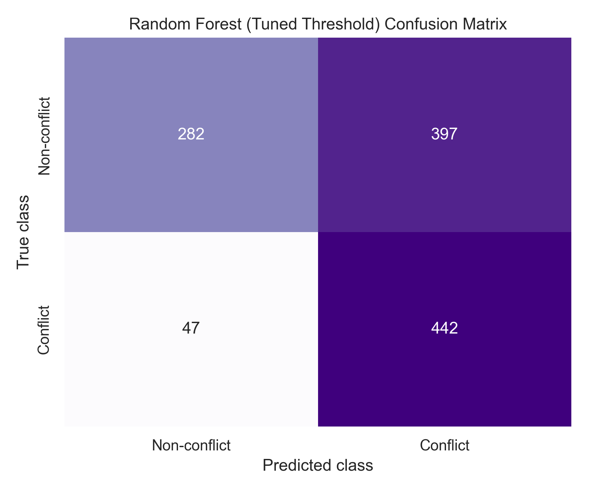
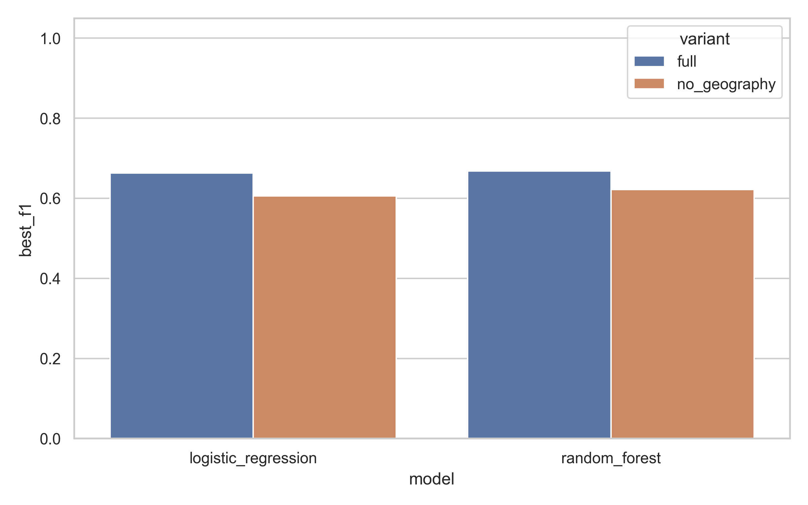
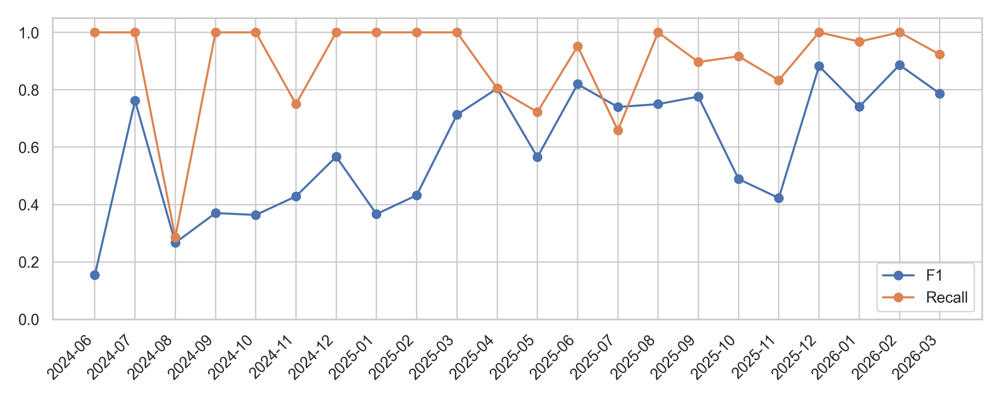
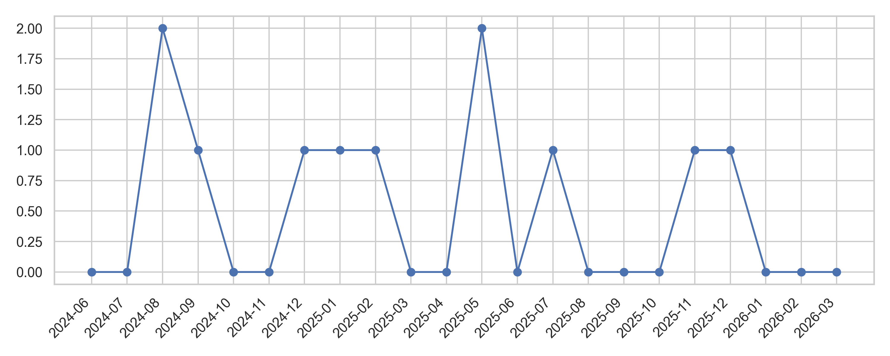
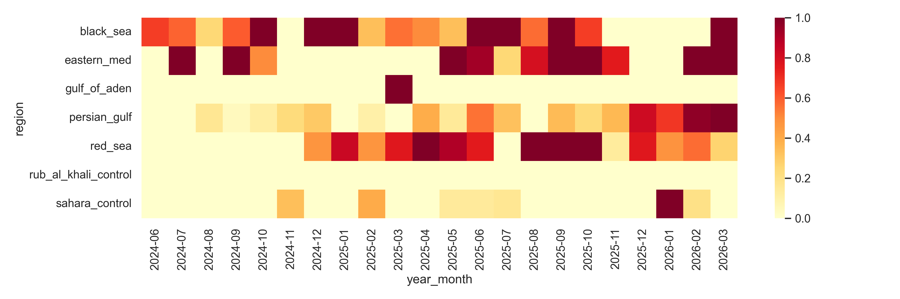

Raw FIRMS detections are sampled for map performance.

Multi-panel summary of thermal events, association rates, temporal behavior, and model/drift performance.


DBSCAN converts raw FIRMS pixels into interpretable thermal events. The main setting balances excessive fragmentation and over-merging.
| setting | n_events | noise_ratio | median_detection_points_per_event | median_duration_days | median_total_frp | sahara_control_association_rate | rub_al_khali_control_association_rate |
|---|---|---|---|---|---|---|---|
| conservative | 7526 | 0.310277 | 4.0 | 1.0 | 70.055 | None | None |
| main | 5840 | 0.187654 | 6.0 | 2.0 | 88.970 | None | None |
| broad | 5524 | 0.165132 | 6.0 | 2.0 | 88.970 | None | None |

| region | number_of_thermal_events | number_of_associated_events | association_rate | mean_event_score | median_event_score |
|---|---|---|---|---|---|
| rub_al_khali_control | 49 | 0 | 0.000 | NaN | NaN |
| sahara_control | 520 | 65 | 0.125 | 3.825738 | 3.74525 |
Rub al Khali is treated as the cleaner low-conflict/control-like baseline. Sahara is treated as a mixed/stress-test region, not a clean negative control.



| model | variant | best_threshold | f1 |
|---|---|---|---|
| logistic_regression | full | 0.4 | 0.662752 |
| decision_tree | full | 0.4 | 0.644269 |
| random_forest | full | 0.4 | 0.668407 |
| svc_rbf | full | 0.4 | 0.658203 |
| gaussian_nb | full | 0.9 | 0.622309 |
| logistic_regression | no_geography | 0.5 | 0.605795 |
| random_forest | no_geography | 0.4 | 0.621469 |
Random Forest remains the main operational model. Full vs no-geography checks whether model skill depends only on geographic patterns. Performance drop without geography indicates geography helps, while remaining performance indicates thermal/time features still carry signal.



| period | region | n_samples | precision | recall | f1 | trigger_low_recall | trigger_low_f1_2months | trigger_positive_rate_shift | trigger_event_count_spike | trigger_prediction_shift |
|---|---|---|---|---|---|---|---|---|---|---|
| 2024-08 | ALL | 42.0 | 0.250000 | 0.285714 | 0.266667 | True | False | False | False | True |
| 2024-09 | ALL | 35.0 | 0.227273 | 1.000000 | 0.370370 | False | True | False | False | False |
| 2024-12 | ALL | 50.0 | 0.395349 | 1.000000 | 0.566667 | False | True | False | False | False |
| 2025-01 | ALL | 52.0 | 0.224490 | 1.000000 | 0.366667 | False | True | False | False | False |
| 2025-02 | ALL | 59.0 | 0.275862 | 1.000000 | 0.432432 | False | True | False | False | False |
| 2025-05 | ALL | 62.0 | 0.464286 | 0.722222 | 0.565217 | True | False | False | False | True |
| 2025-07 | ALL | 78.0 | 0.843750 | 0.658537 | 0.739726 | True | False | False | False | False |
| 2025-11 | ALL | 71.0 | 0.283019 | 0.833333 | 0.422535 | False | True | False | False | False |
| 2025-12 | ALL | 42.0 | 0.789474 | 1.000000 | 0.882353 | False | False | False | False | True |
| 2025-06 | black_sea | 18.0 | 1.000000 | 1.000000 | 1.000000 | False | False | False | True | False |
| 2025-07 | black_sea | 25.0 | 1.000000 | 1.000000 | 1.000000 | False | False | False | True | False |
| 2025-08 | black_sea | 39.0 | 0.564103 | 1.000000 | 0.721311 | False | False | False | True | False |
| 2025-04 | persian_gulf | 33.0 | 0.363636 | 0.307692 | 0.333333 | False | False | True | False | False |
| 2025-05 | persian_gulf | 41.0 | 0.083333 | 0.166667 | 0.111111 | False | False | False | True | False |
| 2025-06 | persian_gulf | 49.0 | 0.574468 | 1.000000 | 0.729730 | False | False | True | True | False |
| 2025-08 | persian_gulf | 29.0 | 0.000000 | 0.000000 | 0.000000 | False | False | True | False | False |
| 2025-12 | persian_gulf | 17.0 | 0.823529 | 1.000000 | 0.903226 | False | False | True | False | False |
| 2026-02 | persian_gulf | 29.0 | 0.965517 | 1.000000 | 0.982456 | False | False | True | False | False |
| 2025-03 | red_sea | 38.0 | 0.763158 | 1.000000 | 0.865672 | False | False | False | True | False |
| 2025-04 | red_sea | 32.0 | 1.000000 | 1.000000 | 1.000000 | False | False | True | False | False |
This is a retraining-trigger framework, not automatic deployment. Sample-size safeguards are used to avoid unstable region-month triggers and to detect model degradation and changing conflict regimes.